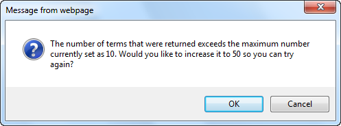
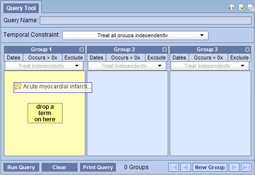
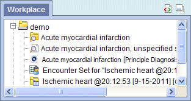
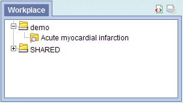
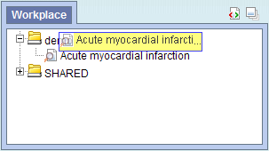

The Navigate Terms view is designed to display the i2b2 vocabulary concepts that are maintained in the Ontology Management Cell of the i2b2 Hive. These concepts are used in many of the i2b2 views and plug-ins, such as the Query Tool view.
This section describes the layout and contents of this view.
The Navigate Terms view displays the concepts listed in the metadata table. These concepts are grouped (categorized) with other similar items. These groupings are displayed in a hierarchal tree that can be expanded to view all the concepts in the associated category.
As stated above, the Navigate Terms view is hierarchical display of the concepts in the metadata table. There are three main branches or compnents of the tree that displays.
The highest level is the name of the metadata table that stores the vocabulary. This level cannot be used when creating a query.
A folder ( ) contains other folders and/or concepts. It can be expanded and collapsed by clicking on the plus sign () or minus sign (
) contains other folders and/or concepts. It can be expanded and collapsed by clicking on the plus sign () or minus sign ( ) next to it. It can also be dragged to other views.
) next to it. It can also be dragged to other views.
The concept ( ) is the lowest level of the ierarchy and cannot be expanded further.
) is the lowest level of the ierarchy and cannot be expanded further.
Users can expand or collapse a folder by clicking on the plus sign () or negative sign ( ) next to the folder icon.
) next to the folder icon.
) next to the folder in the results section of Find Terms view.
Users can define how many concepts to display and whether or not to show hidden terms and/or synonyms. The display options are set in the Navigate Terms Options dialog window, which can be accessed by clicking on the Show Options button ().

The Maximum number of children to display is used when retrieving the search results to be displayed in the results section of the Navigate Terms view. Once the maximum number is reaced a message will appear informing you that you have reached the maximum and continued to retrieve all the concepts in the list may affect performance. You will have the option to continue or to cancel the action.

In the metadata table, an attribute is set to determine whether or not a concept is active, inactive or hidden. If a concept is marked as hidden it will not appear in the list of terms. Selecting Show Hiddens will display those concepts marked to be hidden. For easy identification, hidden terms will be red when displayed in the results list.
Some concepts may be flagged in the metadata table as a synonym of another concept. Selecting Show Synonyms will display both the original concept and the synonym in the Navigate Terms view. For easy identification, synonym terms will be blue when displayed in the results list.
This section describes how to use a concept or group of concepts.
Individual as well as groups of concepts can be dragged and dropped (copied) from the Navigate Terms view to other views in the i2b2 Web Client.
A folder ( ) and all its concepts (children) can be added to other views by dragging the folder name from Navigate Terms to one of the following views.
) and all its concepts (children) can be added to other views by dragging the folder name from Navigate Terms to one of the following views.
A concept ( ) can be added to other views by dragging the name of the concept from Navigate Terms to one of the following views.
) can be added to other views by dragging the name of the concept from Navigate Terms to one of the following views.
A folder or individual concept can be added to the query too view by simply dragging the item from Find Terms view and dropping it into one of the panels in the Query Tool view.



Information in the workplace is related to the most common concepts and queries that an individual uses and in essence becomes their personal workplace.



 ) by clicking on the name of the concept.
) by clicking on the name of the concept.
